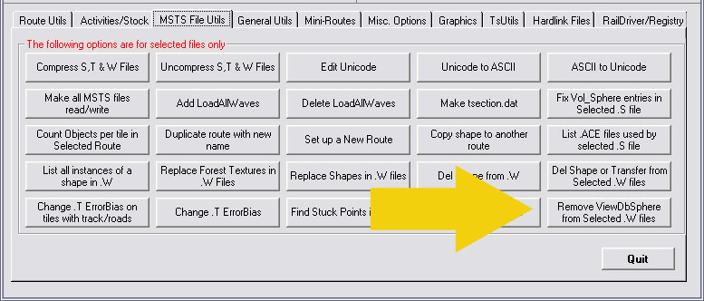

Route-Riter: The Role Of The ViewDbSphere Parameter And Disappearing Shapes
compiled from information published by Wayne Campbell, Paul Gausden, Marc Nelson and others
What is a ViewDbSphere?
The ViewDbSphere statements are added to the world file by the route editor. They are used by 3D engines to improve framerates by culling objects that are not in the field of view (FOV). The mathematics to determine the visibility of a sphere is simple compared to the math necessary to determine the visibility of complex shaped objects. So, to keep the math simple, each object has a ViewDBSphere defined ( in the shape file ) that fully encloses the object. These ViewDBSpheres are then copied into the world file and, to further simplify the math, overlapping ViewDBSpheres are combined to reduce the number of tests needed. The result is a small heirarchical database of spheres within spheres that speeds the process of searching for visible objects.
You'll see that the top level sphere fully encloses all the others. To some extent, RE does this properly. But at some point, I see it seems to all break down. Too bad, because FOV culling is a good technique to improve framerates.
Another problem caused by the ViewDbSphere is the phenomenon of "disappearing" shapes: the reason for the shape disappearing is that the location of the shape doesn't match the ViewDbSphere location.
Should I bother deleting them?
It is safe to delete them and you may see some performance increase in low density tiles, but deleting them in higher density (1000+ objects) may slow things down.
It has also been noted that while in the Route Editor (RE), adding an Object seems to add two objects for each object placed, which seems to include adding a ViewDbSphere statement to the World file. If you delete an object, its ViewDbSphere statement remains as the object count for a tile only decreases by one.
Deleting the ViewDbsphere reduces the object count further. Whilst this may slow down drawing images in heavily-populated route tiles, it may also allow more objects to be placed on already heavily populated tiles or may improve the reliability of the sim in operating routes with object-dense tiles.
It has also been noted that unexplained crashes-to-desktop of some routes in MSTS may be caused by errors in the "VDbId" parameter.
How do I correct the "disappearing shapes" error?
In Route Editor, move your Point Of View (camera) around the shape until you come to a point where it can be selected. Once you have selected the object, right-click, select Properties and change the properties to use one of the shadow options, click OK, and then select and undo the changes in the properties. Once you save in RE, the ViewDbSphere location will update to match that of the shape's actual position (MN).
How can I delete these statements?
Route_Riter v7.0.91 and higher now has an option under MSTS FileUtils:

This as it says, removes all the ViewDbSphere entries from the .w files and it also alters all VDbId () entries to VDbId ( 4294967295 ).
Use with care and ALWAYS back up your vital route files before proceeding.